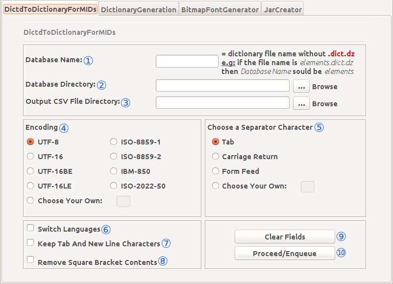
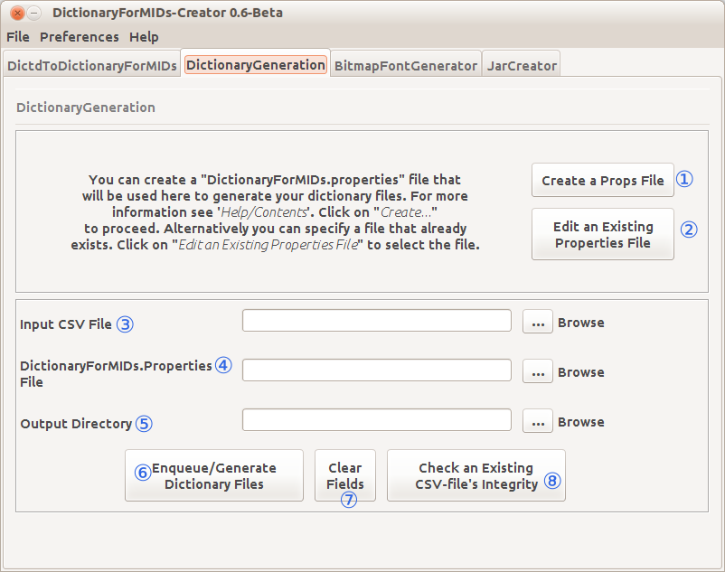
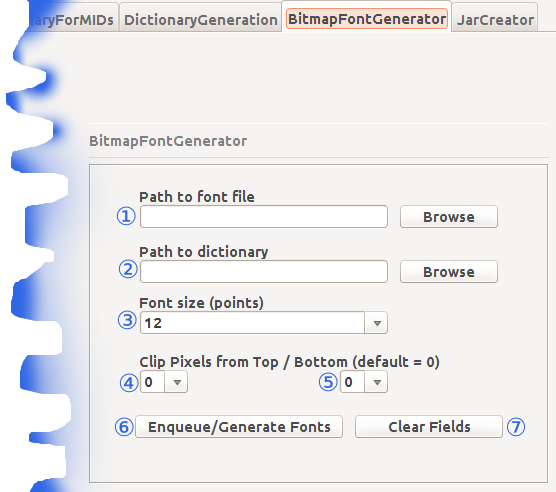
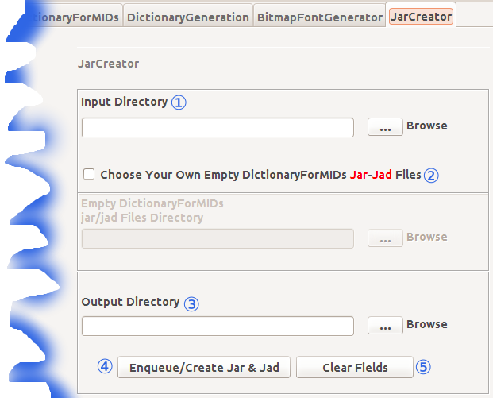

Welcome to the DictionaryForMIDs-Creator Documentation.
Below you will find a quick guide to the GUI components of DfM-Creator.
The picture below is a screen-shot of the DfM-Creator tabs.
This is the GTK+ Look and Feel (on Ubuntu Linux 13.04).
There are four tabs, each one represents one DictionaryForMIDs tool:
- DictdToDictionaryForMIDs
- DictionaryGeneration
- BitmapFontGenerator
- JarCreator

The complete DictdToDictionaryForMIDs tab.

- Database Name: This is where you put the name of the database (without the .ini extension).
- Database Directory: This is the path to the directory containing the database files.
- Output CSV File Directory: This is the path to the location where the output file will be written to.
- Encoding: Here you choose the encoding of the output file.
- Choose a Separator Character: Here you choose the separator character for the output file.
- Switch Languages: Choose if you want to switch the languages.
- Keep Tab And New Line Chars: Choose here, if you would like to keep the tab and new line characters.
- Remove Square Bracket Contents: Choose if you would like to keep the text within square brackets.
- Clear Fields: Reset all the settings and delete the values entered.
- Proceed/Enqueue: Proceed to the conversion process or enqueue this one and come back to set another dict up for conversion.
The complete DictionaryGeneration tab.

- Create a Props File: This takes you to the PropertiesEditor window which enables you to create a properties file.
- Edit an Existing Properties File: This enables you to edit a properties file with PropertiesEditor.
- Input CSV File: This is where you put the input comma-separated-value (CSV) file.
- DictionaryForMIDs.properties File: Put here, the properties file itself.
- Output Directory: This is the path to the output directory.
- Enqueue/Generate Dictionary Files: Click here to proceed to the dictionary generation process or to enqueue
this dictionary and its settings and come back here to provide another dictionary along with its settings so as
to have a queue of dictionaries to be generated. - Clear Fields: Reset all the settings and delete the values entered.
- Check an Existing CSV File's Integrity: This takes you to a window that will check a CSV file for errors.
The complete BitmapFontGenerator tab.

- Path to the Font File: Where the font file is located.
- Path to the Dictionary: Where the dictionaryXXX.csv files' directory is located.
- Font Size (Points): Choose a size here.
- Clip Pixel From Top: choose a number here.
- Clip Pixel From Bottom: choose a number here.
- Generate Bitmap Fonts: Click here to proceed to the bitmap font generation.
- Clear Fields: Reset all the settings and delete the values entered.
The complete JarCreator tab.

- Input Dictionary: Indicate the full path to the DictionaryForMIDs.properties and CSV files' Directory.
- Choose Your Own Empty DictionaryForMIDs Jar-Jad Files Indicate the full path the custom empty DictionaryForMIDs.jar/jad Files
- Output Directory: Put here, the path to the location of the directory that will hold the output file.
- Enqueue/Create Jar & Jad: Click here to proceed to the DictionaryForMIDs.jar/jad files creation or to enqueue
this dictionary and its settings in order to come back here to enqueue another dictionary along with its settings
so as to have a queue containing many dictionaries and JarCreator will process them all! - Clear Fields: Reset all the settings and delete the values entered.
- Quick Tour
- Complete Documentation
- Important changes notes
- Setting up a new dictionary
- DictionaryForMIDs.properties file
- DictionaryUpdate
- DictionaryUpdate - Advanced
- Normation - Available classes
- Normation - Advanced
- Multiple source dictionaries
- Content declarations
- Generation the Dictionary file
- Creating DictionaryForMIDs.jar Manually
- The DictionaryForMIDs-Creator Developer Documentation
(links below point to various sections on the same page)